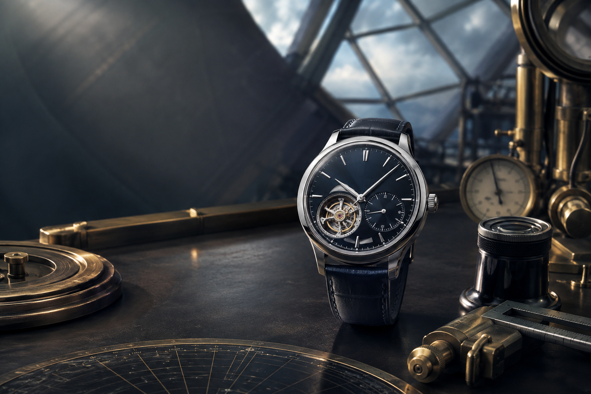

CPL / CONTACTREFERENCE CHANNEL OPEN
CONTACT DESK / LONDON
Send a precise
question.
Write about a specification, collection reference or practical ownership topic. We provide realistic information and confirm scope before any paid work.
- Address
- 3638 Westbourne Grove, London, UK, W2 5SH, GB
- Phone
- +1 2125559857
- hello@chronoprimeline.com